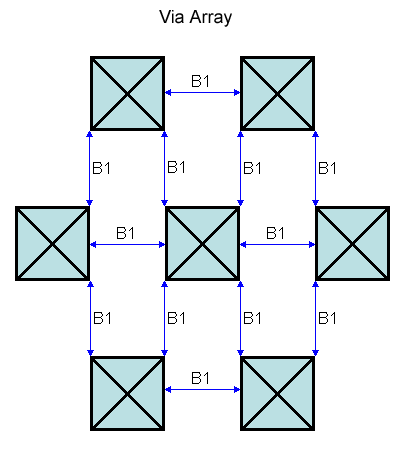

|
 |
 |
||||||
|
|
|
||||||
The built-in oacMinAdjacentViaSpacing layer constraint specifies the required minimum distance between adjacent via cuts. The distance is specified in database units. A via cut is considered adjacent if it is within the specified distance from another cut in any direction including a 45-degree angle.
The optional parameters determine whether via spacing is measured center-to-center or edge-to-edge, whether the constraint applies to only certain connectivity types, and whether the constraint applies to vias on power and ground nets.
| Constraint type: | oaLayerConstraint |
| Value types: | oaIntValue |
| Database types: | oaDesign, oaTech |
| Object types: | oaStdVia, oaCustomVia, oaAppObject |
The following value types are supported by this constraint:
This oaIntValue represents the minimum distance required between adjacent vias in database units.
Units: DBU
The following parameters are supported by this constraint:
| Name | Value Type | Units | Default | Description | ||||||||||||
|---|---|---|---|---|---|---|---|---|---|---|---|---|---|---|---|---|
| distance oacDistanceConstraintParamType |
oaIntValue | DBU | None |
The distance parameter uses oacDistanceConstraintParamType to specify that the constraint only applies if the distance of adjacent vias is less than this value. The distance is specified in database units. |
||||||||||||
| numCuts oacNumCutsConstraintParamType |
oaIntValue | Count | (Required) |
The number-of-cuts parameter uses oacNumCutsConstraintParamType to specify the minimum number of cuts required before the constraint applies. |
||||||||||||
| oaCenterToCenter oacCenterToCenterConstraintParamType |
oaBooleanValue | Boolean | False |
The oacCenterToCenter is a boolean that designates whether cut clearance is measured from the center of one cut to the center of the other cut. If not specified, cut clearance is measured from edge to edge. |
||||||||||||
| oaConnectivityType oacConnectivityTypeConstraintParamType |
oaIntValue | Enum | any |
The oacConnectivityTypeConstraintParamType parameter uses an enumerated value of oacAnyConnectivityType to designate that the constraint applies to any type of connectivity, uses oacSameNetConnectivityType to designate that this constraint applies when via cuts belong to the same net, and uses oacContiguousShapesConnectivityType to designate that this constraint applies only when the via cuts are on the same metal shape. This parameter is represented by an oaConnectivityType enumeration:
|
||||||||||||
| oaExceptSamePGNet oacExceptSamePGNetConstraintParamType |
oaBooleanValue | Boolean | False |
The optional oacExceptSamePGNetConstraintParamType parameter uses a Boolean value. If true, this constraint does not apply to power and ground nets. If not specified, the default value for this parameter is false. |
||||||||||||
| exactAligned oacExactAlignedConstraintParamType |
oaIntValue | Count | (Required) |
This parameter stores the number of cuts that must be perfectly aligned. |
||||||||||||
| sideParallelOverlap oacSideParallelOverlapConstraintParamType |
oaBooleanValue | Boolean | False |
This parameter is set to true if the adjacent via spacing applies and there is non-zero parallel edge overlap between two rectangular vias. |
||||||||||||
| cutClass oacCutClassConstraintParamType |
oaDualIntValue | DBU | None |
This parameter refers to the width and length dimensions of the cut class. |

Minimum spacing constraints help to ensure that geometries are not merged together during fabrication. Many processes require a larger spacing between via cuts when the cut has three or four adjacent vias.
Copyright 2002 - 2010 Cadence Design Systems, Inc.
All rights reserved.